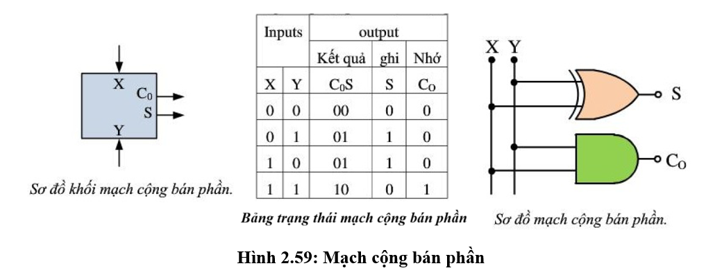
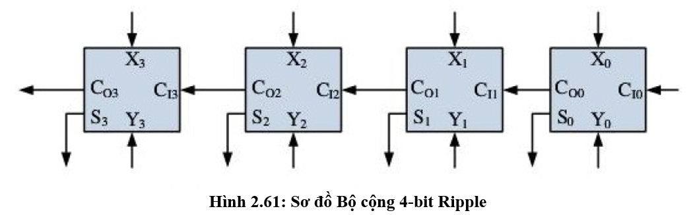

Bài thực hành Thiết kế và Mô phỏng Mạch Kiến trúc Máy tính - CircuitVerse
Các bài thực hành sau đây giúp sinh viên hiểu rõ về cấu trúc và hoạt động của CPU thông qua các mô phỏng trực quan trên nền tảng web. Trình mô phỏng CircuitVerse cho phép sinh viên khám phá các thành phần trong CPU MIPS, như bộ điều khiển, ALU, bộ thanh ghi, bộ nhớ và bus dữ liệu, thông qua sơ đồ mạch logic, từ đó nắm vững cách các thành phần này phối hợp và dữ liệu di chuyển trong quá trình thực thi.
Bài 1-1: Mạch logic cơ bản & Bảng chân trị
Mục tiêu
- Nhận biết AND, OR, NOT, XOR, NAND, NOR, XNOR.
- Tạo bảng chân trị 2 ngõ vào (4 tổ hợp).
- Đo kiểm bằng LED/Probe và chụp hình.
Công cụ & Chuẩn bị
- Tài khoản circuitverse.org; trình duyệt Chrome/Microsoft Edge/Firefox/Cốc Cốc.
- Thư viện: Gates (AND/OR/NOT/XOR/…), Input/Output (Switch, LED).
Hướng dẫn thực hiện
- New Project → đặt tên “CV01_Logic”.
- Thêm 2 Switch (A,B) và 1 LED (Y).
- Nối A,B → AND → Y. Bật lần lượt 00, 01, 10, 11; ghi kết quả.
- Lặp lại cho OR, XOR; với NOT dùng 1 ngõ A.
- Thêm nhãn (Text) các bảng chân trị; Save → Share → Public link.
Yêu cầu nộp
- Ảnh mạch AND/OR/XOR/NOT.
- Bảng chân trị điền đủ 4 tổ hợp cho từng cổng.
- Public link dự án.
Câu hỏi ôn tập
- Khác nhau OR và XOR trên bảng chân trị?
- Tạo NAND từ AND và NOT như thế nào (biểu thức)?
Bài 1-2: Foll Adder 1-bit & Bộ cộng 4-bit (Ripple Carry Adder)
Mục tiêu
- Thiết kế Half Adder (HA) và Foll Adder (FA) 1-bit.
- Ghép 4 FA thành bộ cộng 4-bit dạng Ripple Carry.
- Kiểm thử hoạt động với Cin.
Công cụ & Chuẩn bị
- Các cổng XOR / AND / OR.
- Hex Display hoặc LED.
- Kỹ thuật Subcircuit trong CircuitVerse.
Hướng dẫn thực hiện
- Half Adder: Sum = A XOR B; Carry = A AND B.
- Foll Adder: Sum = A XOR B XOR Cin; Cout = (A & B) OR (Cin & (A XOR B)).
- Tạo subcircuit “FA_1bit”, ghép 4 cái → “Adder_4bit”, nối Cout → Cin kế tiếp.
- Thêm A[3:0], B[3:0] (Input 4-bit), Cin (1-bit); dùng Splitter/Combiner khi cần.
- Test 1: A = 0011, B = 0101, Cin = 0 → Sum = 1000, Cout = 0.
- Test 2: A = 1111, B = 0001, Cin = 1 → Sum = 0001, Cout = 1.
Yêu cầu nộp
- Ảnh mạch HA, FA, Adder_4bit + Public link.
- Bảng kết quả của 2 test.
Câu hỏi ôn tập
- Vì sao có trễ truyền carry (ripple)?
- Nêu ý tưởng Carry Lookahead.
Tham khảo
- Half Adder: Cộng hai bit A, B → tạo Sum và Carry. Không xử lý Cin.
Mạch Half Adder (Bộ cộng bán phần) là một mạch logic thực hiện phép cộng hai bit đầu vào: A và B. Bộ cộng bán phần cho ra hai đầu ra gồm: Sum (Tổng) và Carry (bit nhớ). Tuy nhiên, Half Adder không xử lý được bit nhớ từ phép cộng trước đó, vì vậy nó chỉ dùng trong các phép cộng đơn bit hoặc làm thành phần cơ bản để xây dựng bộ cộng toàn phần (Foll Adder).
 - Foll Adder: Cộng A, B, Cin → tạo Sum và Cout để truyền sang tầng kế tiếp.
Mạch Foll Adder (Bộ cộng toàn phần) là một mạch logic thực hiện phép cộng ba bit đầu vào: A, B và Carry-in (Cin) từ bộ cộng trước đó. Đầu ra của nó là Sum (Tổng) và Carry-out (Cout) để truyền sang bộ cộng tiếp theo. Đây là sơ đồ mạch logic cơ bản của một Foll Adder:

- Ripple Carry 4-bit: Ghép 4 FA nối tiếp; Cout của FA trước → Cin của FA sau.
Bộ cộng Ripple Carry 4-bit được tạo bằng cách nối tiếp bốn bộ Foll Adder 1-bit. Bit nhớ đầu ra (Cout) của mỗi bộ Foll Adder sẽ là bit nhớ đầu vào (Cin) cho bộ Foll Adder tiếp theo (từ bit có trọng số thấp nhất LSB đến bit có trọng số cao nhất MSB).
Giải thích
Mạch cộng 4-bit Ripple Carry Adder là một mạch cộng nhị phân gồm 4 bộ cộng toàn phần (Foll Adder) mắc nối tiếp, mỗi bộ chịu trách nhiệm cộng một cặp bit ở cùng vị trí (X₀–X₃ và Y₀–Y₃). Các bộ cộng được ghép theo chuỗi sao cho Carry-out của bộ cộng bậc thấp hơn sẽ được truyền vào Carry-in của bộ cộng bậc cao hơn. Vì bit nhớ này lan truyền (“ripple”) qua từng tầng, mạch có tên là Ripple Carry.
Cấu trúc hoạt động
- FA₀ xử lý bit thấp nhất (LSB): X₀, Y₀ và Cin₀ → tạo ra S₀ và Cout₀
- Cout₀ được đưa sang Cin₁ của FA₁
- Quá trình tiếp tục qua FA₂ và FA₃
- Bộ cộng cuối (FA₃) tạo ra S₃ và Cout₃ (bit nhớ cuối – MSB)
Bài 1-3: Thanh ghi 4-bit bằng D Flip-Flop (có Load đúng kỹ thuật)
Mục tiêu
- Xây thanh ghi 4-bit với MUX 2:1 + DFF (giữ khi Load = 0).
- Dùng Splitter/Combiner đúng bit-width cho bus 4-bit.
- Kiểm thử hoạt động ghi và giữ dữ liệu của thanh ghi.
Công cụ & Chuẩn bị
- Sequential: DFF, Clock.
- Decoders & Plexers: MUX 2:1.
- I/O: Splitter, Combiner, Hex Display.
Hướng dẫn thực hiện
- Nối W-data[3:0] → Splitter (In = 4, Out = 1, FanOut = 4) → tách thành W0, W1, W2, W3.
- Với mỗi bit i: MUX 2:1 (In0 ← Qi, In1 ← W[i], S ← Load) → DFF → Qi; tất cả DFF dùng chung một Clock (khoảng 1 Hz).
- Nối Q0..Q3 → Combiner → Q-bus[3:0] → Hex Display để hiển thị giá trị thanh ghi.
- Test A: Đặt W = 1010, Load = 1, nhấn một xung Clock → kiểm tra Q = 1010.
- Test B: Đặt W = 0101, Load = 0, nhấn một xung Clock → kiểm tra Q vẫn giữ 1010.
- Test C: Giữ W = 0101, đặt Load = 1, nhấn một xung Clock → kiểm tra Q = 0101.
Yêu cầu nộp
- Ảnh mạch thanh ghi 4-bit hoàn chỉnh.
- Ảnh kết quả của 3 test (A, B, C) thể hiện rõ W, Load, Q/Hex Display.
- Public link mạch (nếu làm trên nền tảng online).
- Bảng log giá trị Q qua từng bước (trước và sau mỗi xung Clock cho từng test).
Câu hỏi ôn tập
- Vì sao gating bằng AND trước chân D là sai về mặt kỹ thuật thiết kế mạch tuần tự?
- Viết biểu thức D_next cho mỗi bit khi Load = 0 và khi Load = 1 (sau đó rút gọn thành một biểu thức logic duy nhất).
Bài 1-4: ALU 4-bit (ADD, SUB, AND, OR) + MUX chọn chức năng
Mục tiêu
- Xây 4 khối: ADD, SUB (A + ~B + 1), AND, OR.
- Dùng MUX 4→1 (bus) theo Op[1:0].
- Tạo cờ Zero và Carry.
Công cụ & Chuẩn bị
- Adder_4bit (CV-02), MUX bus.
- Các cổng logic (AND, OR, NOT).
- Hex Display để quan sát kết quả.
Hướng dẫn
- Dựng 4 khối chức năng: ADD; SUB = A + (~B) + 1; AND; OR.
- Dùng MUX 4→1 (bus) để chọn kết quả theo Op = 00 / 01 / 10 / 11.
- Zero = (Resolt == 0000); Carry lấy từ khối Adder.
- Test: A = 1001, B = 0011 ở cả 4 Op; ghi lại Resolt, Carry, Zero.
Yêu cầu nộp
- Ảnh mạch ALU hoàn chỉnh.
- Bảng kết quả cho 4 phép toán.
- Public link dự án.
Câu hỏi ôn tập
- Tại sao SUB = A + ~B + 1?
- Nếu thêm XOR, cần thay đổi gì trong MUX hoặc thiết kế?
Bài 1-5: CPU mini – Register File 4×4-bit (2R1W) + ALU + Control
Mục tiêu
- Ghép Register File (xx chọn ghi; yy/zz chọn đọc) với ALU.
- Chạy chuỗi thao tác ghi, đọc và tính toán.
- Ghi log giá trị các thanh ghi theo thời gian.
Công cụ & Chuẩn bị
- Decoder 2→4 (xx) để chọn thanh ghi ghi.
- MUX 4→1 cho yy và zz để chọn 2 cổng đọc.
- 4 thanh ghi 4-bit (CV-03).
- ALU 4-bit (CV-04).
Hướng dẫn thực hiện
- Dựng Register File 4×4: W-data cấp song song; Decoder(xx) → Load_Ra..Rd; yy → MUX → RA; zz → MUX → RB.
- Đưa RA và RB vào ALU; Resolt quay lại W-data; dùng xx để chọn thanh ghi đích cần ghi.
- Chuỗi thao tác:
- B1) W = 0001, xx = 10 (ghi Rc), nhấn Clock → Rc = 0001.
- B2) Op = ADD, yy = 10 (Rc), zz = 00 (Ra), ghi kết quả về Rd.
- B3) Thử SUB / AND / OR và quan sát sự thay đổi của Ra..Rd.
Yêu cầu nộp
- Ảnh sơ đồ CPU mini.
- Bảng log giá trị Ra..Rd theo thời gian (sau từng bước B1–B3).
- Public link dự án.
Câu hỏi ôn tập
- Nguy cơ Hazard nếu thêm pipeline?
- Làm thế nào để mở rộng lên 8 thanh ghi và hỗ trợ 2 cổng ghi?